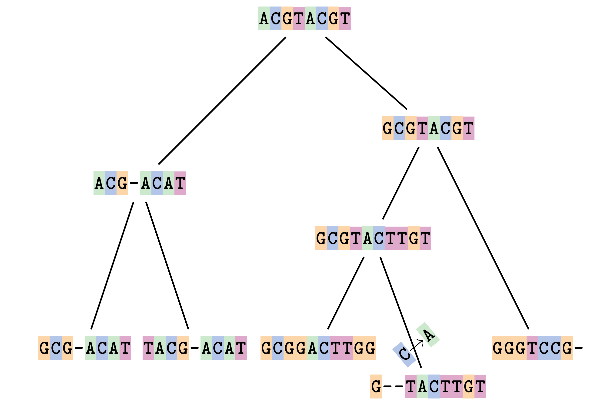

Phylogenetics - Back to Basics - Multiple Sequence Alignment
Contributors
Motivation
We use sequence alignment to:
- identify complex relationships among multiple species - more than just pairwise comparisons;
- find homologous parts (sites / loci) in sequences that may be under different selection dynamics;
- and to build phylogenetic trees!
Multiple sequence alignment (MSA) is a required step in molecular phylogenetics
—
Sequence Alignment
.left[One of the best understood and best solved bioinformatics problem is how to align two sequences.]
.left[In order to do this we need to know:]
- what an “alignment” really means;
- how to judge how good an alignment is;
-
an algorithm to do the alignment.
What is an alignment?
Given two sequences like GGGCTGAA and GGGACTG “an alignment” is a mapping of their positions (a.k.a. “sites”) to a common ordering, by inserting gaps in one sequence or another:
 </p>
—
</p>
—
Alignments represent homology
Our goal with sequence alignment is to identify which regions, down to individual positions in a molecular sequence, are homologous: that is, their shared evolutionary history is the same as that of the taxa of interest.
It's like tracing the origin of a set of transcribed documents through all their copies back to the original, where each was only copied (with maybe some mistakes) from one predecessor.
Once we have identified homologous sites then we can analyse their differences and similarities under an evolutionary model - a crucial centrepiece of phylogenetic analysis, and in fact of all comparative analysis of molecular sequences.
Sequences evolve on a tree
 —
—
Sequences evolve on a tree
 —
—
Sequences evolve on a tree
 —
—
Sequences evolve on a tree
 —
—
Sequences evolve on a tree
 —
—
Sequences evolve on a tree
 —
—
Sequences evolve on a tree
 —
—
Sequences evolve on a tree

—
Sequences evolve on a tree
 —
—
Sequences evolve on a tree
 —
—
Let’s align these
Gaps don’t remain in the history so we only have
.image-50[  ]
—
]
—
A good alignment
This alignment reflects truth
.image-50[  ]
—
]
—
Although…
But this alignment also looks “good” (?)
.image-50[  ]
]
Although…
And so does this
.image-50[  ]
]
This is nonsensical
Only matches and indels! Win?
.image-50[  ]
]
Here, the indels do not make sense as having come from the same phylogenetic history.
Fixing errors

At 1 a gap has been inserted in EVERY sequence.
Fixing errors
At 2 the gaps don’t line up, but they could.
Fixing errors

This fixes both problems.
Rating alignments
This can be a bit of an art.
.left[You need to:]
-
balance the number of gaps with number of mismatches
-
notice when there are insertions / deletions that don’t make sense, where there are alternative arrangements that do
Pair-wise Alignment
.center[Dynamic Programming Approach]
Sequence Similarity
To do any kind of comparison we need a distance or similarity measure.
Without it we can’t say whether, e.g., these two species are more similar than those two.
- Sequence Dissimilarity
- Two main methods first: Hamming and p-distances, counting the number or proportion of differences between sequences
- Edit cost
- a measure of the amount of evolutionary “work” that has to be done to change one character state into another one
- Likelihood
- under a specific model of evolution, what is the probability that we would observe these sequences?
Hamming Distance
The Hamming distance between two sequences is just the number of differences between them.
It makes no distinction between substitutions or insertions/deletions, and not between transitions and transversions.
.image-40[  ]
]
Sequence length: 20
Number of differences: 5
Hamming Distance = 5
P-distance = 5/20 = 0.25 or 25%
Edit Cost
We use a matrix of costs to describe how much evolutionary “work” must be done to convert one character to another.
.pull-left[
This is the Edit cost matrix.
|-|A|C|G|T|-| |——|——————–| |A|0|1|2|1|5| |C|1|0|1|2|5| |G|2|1|0|1|5| |T|1|2|1|0|5| |-|5|5|5|5|n/a| ] .pull-right[
.image-75[  ]
Complete edit-cost = 1 + 1 + 2 + 1 + 5 = 10
]
Using edit costs we can describe better the relationships between sequences: for example it’s less common for an A to change to a G in the above than for an A to change to a T, in turn less common than for an A to remain as an A.
–
Also note we have introduced a bigger cost for aligning any nucleotide with a gap, reflecting our believe that insertion/deletion events are less common than substitutions.
What price a gap?
There are two basic methods for assigning a cost c to a gap of length g in a sequence.
Linear cost: \(c = -dg\)
where \(d\) is the gap open penalty;
Affine cost: \(c = -d - (g-1)e\)
where \(e\) is the gap extension penalty.
Typical values are \(d = 10, e = 0.1\).
The affine gap cost method is the most complex method we can use in order to solve the alignment of two sequences quickly.
More complex models prohibit the use of dynamic programming to solve the alignment (and must use heuristics).
Numbers of alignments
For two sequences of length \(x\) and \(y\), there are \(\frac{(x+y)!}{x!\ y!}\) possible alignments.
For three sequences, of length \(x\), \(y\) and \(z\) say, there are \(\frac{(x+y+z)!}{x!\ y!\ z!}\) alignments.
For \(n\) sequences of length 10, this increases rapidly:
| n | Hash alignments |
|---|---|
| 2 | 184756 |
| 3 | 5.55 × 10^12 |
| 4 | 4.71 × 10^21 |
| 5 | 4.83 × 10^31 |
| 6 | 3.64 × 10^42 |
| 7 | 1.45 × 10^54 |
| 8 | 2.38 × 10^66 |
| 9 | 4.94 × 10^85 |
| 10 | 2.35 × 10^92 |
In general it is not possible - even with really fast computers - to guarantee optimal multiple alignments, even with simple costing schemes.
—
Dynamic Programming
.left[Dynamic Programming (DP) is a common method to solve many types of problems, including pairwise sequence alignment. ]
- Solves local problems optimally
- Amalgamates these into globally optimal complete solutions
-
“Fast”
DP overview
Dynamic Programming solves problems by breaking them down recursively into (slightly) smaller problems.

In terms of sequence alignment, this comes down to basing alignment of two sequences up to positions i and j in terms of the best alignments yet found for the two sequences, up to positions \(i-1,j-10\), \(i,j-1\), and \(i-1,j\).
#DP overview (cont.)

Dynamic Programming alignment
- Array two sequences along the top and left sides of a cost matrix.
- Fill in the cells of the matrix from top-left to bottom right.
At each stage find the minimum cost sub-alignment and add to it:
2.1 Find the maximum score from the previous cells including gap costs;
2.2 Put the result into this new cell;
2.3 Note which cell we chose with a pointer or reference.
.image-25[  ]
]
We add the cost of the best solution to the previous cells (above, to the left and above-left) to the best possible score for this cell.
#Alignment example
We will align two amino acid sequences next:
Input sequences:
.center[
| x | HEAGAWGHEE |
|—|—|
| y | PAWHEAE |
]
Filling in the cost matrix
Edit costs for these two sequences:
| H | E | A | G | A | W | G | H | E | E | |
|---|---|---|---|---|---|---|---|---|---|---|
| P | -2 | -1 | -1 | -2 | -1 | -4 | -2 | -2 | -1 | -1 |
| A | -2 | -1 | 5 | 0 | 5 | -3 | 0 | -2 | -1 | -1 |
| W | -3 | -3 | -3 | -3 | -3 | 15 | -3 | -3 | -3 | -3 |
| H | 10 | 0 | -2 | -2 | -2 | -3 | -2 | 10 | 0 | 0 |
| E | 0 | 6 | -1 | -3 | -1 | -3 | -3 | 0 | 6 | 6 |
| A | -2 | -1 | 5 | 0 | 5 | -3 | 0 | -2 | -1 | -1 |
| E | 0 | -6 | -1 | -3 | -1 | -3 | -3 | 0 | 6 | 6 |
Dynamic Programming: fill in
 —
—
Dynamic Programming: backtrack

Alignments are paths in the table
 —
—
Conclusion of simple alignment
Aligned sequences:
| \(s\_{1}\) | H | E | A | G | A | W | G | H | E | - | E |
| \(s\_{2}\) | - | - | P | - | A | W | - | H | E | A | E |
| -5 | -5 | -1 | -5 | +5 | +15 | -5 | +10 | +6 | -5 | +6 |
Total cost = 16
Generalising this approach
Without too much effort it is possible to generalise this approach:
Needleman-Wunsch is used for local alignment;
Smith-Waterman is used for global alignment;
longest match can be found by setting high match costs and large negative mis-match and gap costs;
BLAST uses this system once good patching pairs have been found;
Affine gap scores as mentioned, accounting for gap opening and gap extension penalties to differ.
#Properties of DP Pairwise Alignment
-
Pairwise Sequence Alignment takes an amount of time that is proportional to the number of cells in the table, which is roughly the product of the lengths of the two sequences.
That means it is \(O(nm)\) if the lengths of the sequences are \(n\) and \(m\); usually as these are about the same we can write \(O(n^{2})\): it’s quadratic in sequence length.
-
The amount of space required is also quadratic in \(n\). There is a linear-space version of the DP method (which is rarely used as it takes longer).
-
This solution is globally optimal. It will always produce an optimal alignment, though there may be more than one.
-
With more sequences, the size of the table increase: For \(k\) sequences the algorithm is \(O(n^{k})\): not practical.
Multiple Sequence Alignment: Aligning groups of sequences using heuristics
.center[Aligning multiple sequences]
—
#Aligning multiple sequences
We cannot check all possible alignments (there are simply too many), so we must use make a compromise.
We will use pairwise alignment (which is easy) and build up a multiple sequence alignment from pairs of sequences.
These heuristic methods are used in Clustal, GCG and others.
—
Progressive Alignment
.left[The process is quite simple:]
- Align all pairs of sequences using DP (dynamic programming).
- Create a distance matrix based on the alignments.
- Form a guide tree from the distance matrix. This is not the same as a phylogenetic tree, nor should it be interpreted as one!
-
Progressively align the pairs of sequences with DP, creating summary (consensus) sequences as we go.
MAFFT, Muscle, T-COFFEE, k-align
- Clustal is not that great to be honest
- Other very good automatic alignment methods exist, such as Muscle, T-Coffee, k-align, di-align.
- My current favourites are Muscle and MAFFT.
MAFFT
“MAFFT offers various multiple alignment strategies. They are classified into three types, (a) the progressive method, (b) the iterative refinement method with the WSP score, and (c) the iterative refinement method using both the WSP and consistency scores. In general, there is a tradeoff between speed and accuracy. The order of speed is a > b > c, whereas the order of accuracy is a < b < c. The results of benchmarks can be seen here. The following are the detailed procedures for the major options of MAFFT.”
Source: MAFFT is available at https://mafft.cbrc.jp/; first paper 10.1093/nar/gkf436
MAFFT algorithms overview
 —
—
Anolis example

Around site 982-990 there is a 2 bp gap in all sequences.
Anolis example

Here I have lined up these gaps: more substitutions? but makes sense.
Anolis example

We can remove the gap-only sites now. There’s more to do!
What’s Next?
Once your sequences are properly aligned, they can be used for phylogenetic analysis.
—
Thank you!
.center[Next: building trees from distances!]
Thank you!
This material is the result of a collaborative work. Thanks to the Galaxy Training Network and all the contributors! Tutorial Content is licensed under
Creative Commons Attribution 4.0 International License.
Tutorial Content is licensed under
Creative Commons Attribution 4.0 International License.